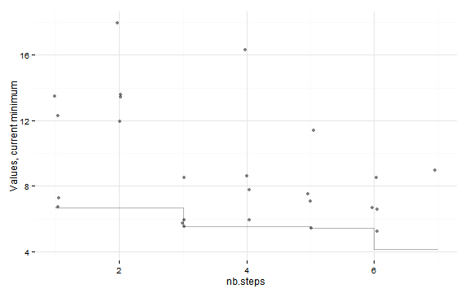
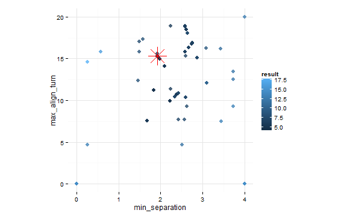

This example is using NetLogo Flocking model (Wilensky, 1998) to demonstrate parameter fitting with simulated annealing.
There are many R packages for solving optimization problems (see CRAN Task View). This example uses GenSA function from GenSA package (Xiang et al., 2013). See also Thiele, Kurth & Grimm (2014) chapter 2.31 Simulated annealing.
Experiment definition is the same as in L-BFGS-B Optimization example:
experiment <- nl_experiment(
model_file = "models/Sample Models/Biology/Flocking.nlogo",
setup_commands = c("setup", "repeat 100 [go]"),
iterations = 5,
param_values = list(
world_size = 50,
population = 80,
vision = 6,
min_separation = seq(from = 0, to = 4, by = 0.5),
max_align_turn = seq(from = 0, to = 20, by = 2.5)
),
mapping = c(
min_separation = "minimum-separation",
max_align_turn = "max-align-turn"),
step_measures = measures(
converged = "1 -
(standard-deviation [dx] of turtles +
standard-deviation [dy] of turtles) / 2",
mean_crowding =
"mean [count flockmates + 1] of turtles"
),
eval_criteria = criteria(
c_converged = mean(step$converged),
c_mcrowding = mean(step$mean_crowding)
),
repetitions = 10, # repeat simulations 10 times
eval_aggregate_fun = mean, # aggregate over repetitions
eval_mutate = criteria( # evaluation criterium
eval_value =
sqrt((c_mcrowding - 8)^2 + 400*(c_converged - 1)^2)
)
)In this example the nl_eval_run function is used as evaluation function instead of evaluating all parameter sets with nl_run.
Note that this kind of evaluation requires started NetLogo instance. User have to take care to initialize NetLogo and load the model before optimization begins and close NetLogo when it is no longer needed (see nl_eval_run in package documentation).
library(GenSA)
cl <- nl_eval_init(experiment, parallel = TRUE)
trace <- nl_eval_tracer(verbose = FALSE)
param_range <- nl_get_param_range(experiment)
set.seed(42)
result <- GenSA(
par = param_range$upper,
fn = nl_eval_run,
experiment = experiment,
criteria = "eval_value",
call_back = trace$add,
parallel = TRUE, cluster = cl,
param_names = names(param_range$lower),
control=list(max.time = 60*5), # let it run for 5 minutes
lower = param_range$lower,
upper = param_range$upper
)
nl_eval_close(parallel = TRUE, cl)library(ggplot2)
dat <- as.data.frame(result$trace.mat)
ggplot(dat, aes(x = nb.steps, y =current.minimum)) +
geom_point(data = dat,
aes(x = nb.steps, y = function.value),
position = position_jitter(height = 0, width = 0.05),
alpha = 0.5)+
geom_step(alpha = 0.3) +
theme_minimal() +
ylab("Values, current minimum")
final <- setNames(data.frame(t(result$par)), names(param_range$lower))
final$result <- result$value
htmlTable::htmlTable(round(final,1))| min_separation | max_align_turn | result | |
|---|---|---|---|
| 1 | 1.9 | 15.3 | 4.1 |
dat <- trace$get()
ggplot(dat, aes(x = min_separation, y = max_align_turn, color = result)) +
geom_point(size = 3, alpha = 0.8) +
geom_point(data = final , size = 10, shape = 8, color = "red") +
theme_minimal() +
#theme(legend.position = "none") +
coord_fixed(4/20)